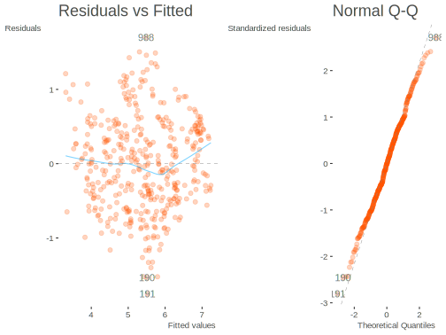
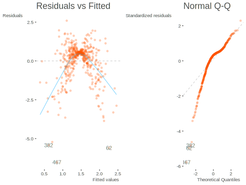
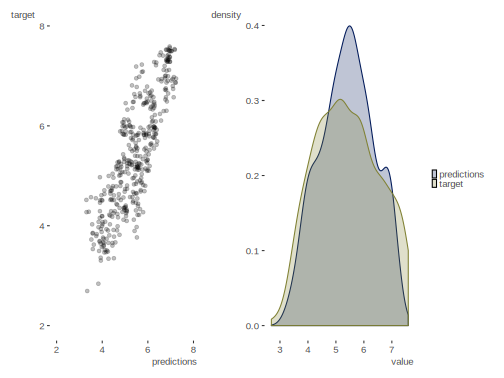
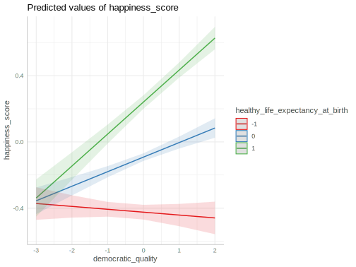
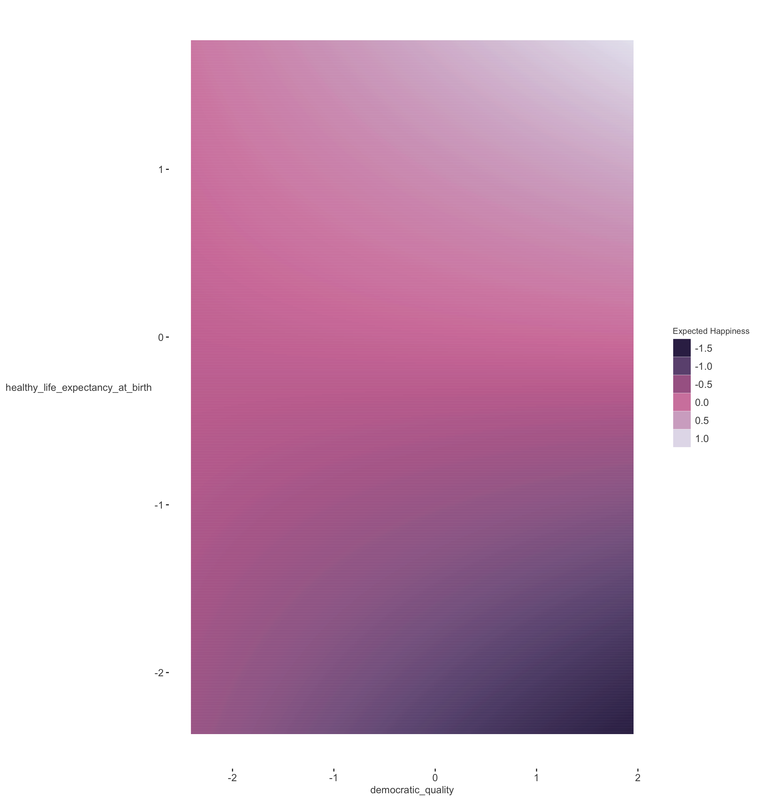
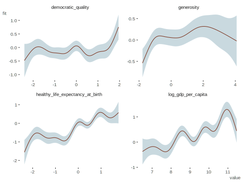

Model Criticism
It isn’t enough to simply fit a particular model, we must also ask how well it matches the data under study, if it can predict well on new data, where it fails, and more. In the following we will discuss how we can better understand our model and its limitations.
Model Fit
Standard linear model
In the basic regression setting we can think of model fit in terms of a statistical result, or in terms of the match between our model predictions and the observed target values. The former provides an inferential perspective, but as we will see, is limited. The latter regards a more practical result, and may provide a more nuanced or different conclusion.
Statistical Assessment
In a standard linear model we can compare a model where there are no covariates vs. the model we actually care about, which may have many predictor variables. This is an almost useless test, but the results are typically reported both in standard output and academic presentation. Let’s think about it conceptually- how does the variability in our target break down?
\[\textrm{Total Variance} = \textrm{Model Explained Variance} + \textrm{Residual Variance}\]
So the variability in our target (TV) can be decomposed into that which we can explain with the predictor variables (MEV), and everything else that is not in our model (RV). If we have nothing in the model, then TV = RV.
Let’s revisit the summary of our model. Note the F-statistic, which represents a statistical test for the model as a whole.
Call:
lm(formula = happiness_score ~ democratic_quality + generosity +
log_gdp_per_capita, data = happy)
Residuals:
Min 1Q Median 3Q Max
-1.75376 -0.45585 -0.00307 0.46013 1.69925
Coefficients:
Estimate Std. Error t value Pr(>|t|)
(Intercept) -1.01048 0.31436 -3.214 0.001412 **
democratic_quality 0.17037 0.04588 3.714 0.000233 ***
generosity 1.16085 0.19548 5.938 6.18e-09 ***
log_gdp_per_capita 0.69342 0.03335 20.792 < 2e-16 ***
---
Signif. codes: 0 '***' 0.001 '**' 0.01 '*' 0.05 '.' 0.1 ' ' 1
Residual standard error: 0.6283 on 407 degrees of freedom
(1293 observations deleted due to missingness)
Multiple R-squared: 0.6953, Adjusted R-squared: 0.6931
F-statistic: 309.6 on 3 and 407 DF, p-value: < 2.2e-16The standard F statistic can be calculated as follows, where \(p\) is the number of predictors35:
\[F = \frac{MV/p}{RV/(N-p-1)}\]
Conceptually it is a ratio of average squared variance to average unexplained variance. We can see this more explicitly as follows, where each predictor’s contribution to the total variance is provided in the Sum Sq column.
Analysis of Variance Table
Response: happiness_score
Df Sum Sq Mean Sq F value Pr(>F)
democratic_quality 1 189.192 189.192 479.300 < 2.2e-16 ***
generosity 1 6.774 6.774 17.162 4.177e-05 ***
log_gdp_per_capita 1 170.649 170.649 432.324 < 2.2e-16 ***
Residuals 407 160.653 0.395
---
Signif. codes: 0 '***' 0.001 '**' 0.01 '*' 0.05 '.' 0.1 ' ' 1If we add those together and use our formula above we get:
\[F = \frac{366.62/3}{160.653/407} = 309.6\]
Which is what is reported in the summary of the model. And the p-value is just pf(309.6, 3, 407, lower = FALSE), whose values can be extracted from the summary object.
value numdf dendf
309.5954 3.0000 407.0000 [1] 1.239283e-104Because the F-value is so large and p-value so small, the printed result in the summary doesn’t give us the actual p-value. So let’s demonstrate again with a worse model, where the p-value will be higher.
Call:
lm(formula = happiness_score ~ generosity, data = happy)
Residuals:
Min 1Q Median 3Q Max
-2.81037 -0.89930 0.00716 0.84924 2.33153
Coefficients:
Estimate Std. Error t value Pr(>|t|)
(Intercept) 5.41905 0.04852 111.692 < 2e-16 ***
generosity 0.89936 0.30351 2.963 0.00318 **
---
Signif. codes: 0 '***' 0.001 '**' 0.01 '*' 0.05 '.' 0.1 ' ' 1
Residual standard error: 1.122 on 533 degrees of freedom
(1169 observations deleted due to missingness)
Multiple R-squared: 0.01621, Adjusted R-squared: 0.01436
F-statistic: 8.78 on 1 and 533 DF, p-value: 0.003181[1] 0.003181551We can make this F-test more explicit by actually fitting a null model and making the comparison. The following will provide the same result as before. We make sure to use the same data as in the original model, since there are missing values for some covariates.
happy_model_null = lm(happiness_score ~ 1, data = model.frame(happy_model_base))
anova(happy_model_null, happy_model_base)Analysis of Variance Table
Model 1: happiness_score ~ 1
Model 2: happiness_score ~ democratic_quality + generosity + log_gdp_per_capita
Res.Df RSS Df Sum of Sq F Pr(>F)
1 410 527.27
2 407 160.65 3 366.62 309.6 < 2.2e-16 ***
---
Signif. codes: 0 '***' 0.001 '**' 0.01 '*' 0.05 '.' 0.1 ' ' 1In this case our F statistic generalizes to the following, where \(\textrm{Model}_1\) is the simpler model and \(p\) now refers to the total number of parameters estimated (i.e. same as before + 1 for the intercept)
\[F = \frac{(\textrm{Model}_2\ \textrm{RV} - \textrm{Model}_1\ \textrm{RV})/(p_2 - p_1)}{\textrm{Model}_2\ \textrm{RV}/(N-p_2-1)}\]
From the previous results, we can perform the necessary arithmetic based on this formula to get the F statistic.
[1] 309.6054\(R^2\)
The statistical result just shown is mostly a straw man type of test- who actually cares if our model does statistically better than a model with nothing in it? Surely if you don’t do better than nothing, then you may need to think more intently about what you are trying to model and how. But just because you can knock the straw man down, it isn’t something to get overly excited about. Let’s turn instead to a different concept- the amount of variance of the target variable that is explained by our predictors. For the standard linear model setting, this statistic is called R-squared (\(R^2\)).
Going back to our previous notions, \(R^2\) is just:
\[R^2 =\textrm{Model Explained Variance}/\textrm{Total Variance}\]
This also is reported by default in our summary printout.
Call:
lm(formula = happiness_score ~ democratic_quality + generosity +
log_gdp_per_capita, data = happy)
Residuals:
Min 1Q Median 3Q Max
-1.75376 -0.45585 -0.00307 0.46013 1.69925
Coefficients:
Estimate Std. Error t value Pr(>|t|)
(Intercept) -1.01048 0.31436 -3.214 0.001412 **
democratic_quality 0.17037 0.04588 3.714 0.000233 ***
generosity 1.16085 0.19548 5.938 6.18e-09 ***
log_gdp_per_capita 0.69342 0.03335 20.792 < 2e-16 ***
---
Signif. codes: 0 '***' 0.001 '**' 0.01 '*' 0.05 '.' 0.1 ' ' 1
Residual standard error: 0.6283 on 407 degrees of freedom
(1293 observations deleted due to missingness)
Multiple R-squared: 0.6953, Adjusted R-squared: 0.6931
F-statistic: 309.6 on 3 and 407 DF, p-value: < 2.2e-16With our values from before for model and total variance, we can calculate it ourselves.
[1] 0.6953174Here is another way. Let’s get the model predictions, and see how well they correlate with the target.
predictions = predict(happy_model_base)
target = happy_model_base$model$happiness_score
rho = cor(predictions, target)
rho[1] 0.8338528[1] 0.6953106Now you can see why it’s called \(R^2\). It is the squared Pearson \(r\) of the model expected value and the observed target variable.
Adjustment
One problem with \(R^2\) is that it always goes up, no matter what nonsense you add to a model. This is why we have an adjusted \(R^2\) that attempts to balance the sample size and model complexity. For very large data and/or simpler models, the difference is negligible. But you should always report the adjusted \(R^2\), as the default \(R^2\) is actually upwardly biased and doesn’t account for additional model complexity36.
Beyond OLS
People love \(R^2\), so much that they will report it wherever they can, even coming up with things like ‘Pseudo-\(R^2\)’ when it proves difficult. However, outside of the OLS setting where we assume a normal distribution as the underlying data-generating mechanism, \(R^2\) has little application, and so is not very useful. In some sense, for any numeric target variable we can ask how well our predictions correlate with the observed target values, but the notion of ‘variance explained’ doesn’t easily follow us. For example, for other distributions the estimated variance is a function of the mean (e.g. Poisson, Binomial), and so isn’t constant. In other settings we have multiple sources of (residual) variance, and some sources where it’s not clear whether the variance should be considered as part of the model explained variance or residual variance. For categorical targets the notion doesn’t really apply very well at all.
At least for GLM for non-normal distributions, we can work with deviance, which is similar to the residual sum of squares in the OLS setting. We can get a ‘deviance explained’ using the following approach:
- Fit a null model, i.e. intercept only. This gives the total deviance (
tot_dev). - Fit the desired model. This provides the model unexplained deviance (
model_dev) - Calculate \(\frac{\textrm{tot_dev} -\textrm{model_dev}}{\textrm{tot_dev}}\)
But this value doesn’t really behave in the same manner as \(R^2\). For one, it can actually go down for a more complex model, and there is no standard adjustment, neither of which is the case with \(R^2\) for the standard linear model. At most this can serve as an approximation. For more complicated settings you will have to rely on other means to determine model fit.
Classification
For categorical targets we must think about obtaining predictions that allow us to classify the observations into specific categories. Not surprisingly, this will require different metrics to assess model performance.
Accuracy and other metrics
A very natural starting point is accuracy, or what percentage of our predicted class labels match the observed class labels. However, our model will not spit out a character string, only a number. On the scale of the linear predictor it can be anything, but we will at some point transform it to the probability scale, obtaining a predicted probability for each category. The class associated with the highest probability is the predicted class. In the case of binary targets, this is just an if_else statement for one class if_else(probability >= .5, 'class A', 'class B').
With those predicted labels and the observed labels we create what is commonly called a confusion matrix, but would more sanely be called a classification table, prediction table, or just about any other name one could come up with in the first 10 seconds of trying. Let’s look at the following hypothetical result.
|
|
In some cases we predict correctly, in other cases not. In this 2 x 2 setting we label the cells A through D. With things in place, consider the following the following nomenclature.
True Positive, False Positive, True Negative, False Negative: Above, these are A, B, D, and C respectively.
Now let’s see what we can calculate.
Accuracy: Number of correct classifications out of all predictions (A + D)/Total. In the above example this would be (41 + 13)/91, about 59%.
Error Rate: 1 - Accuracy.
Sensitivity: is the proportion of correctly predicted positives to all true positive events: A/(A + C). In the above example this would be 41/57, about 72%. High sensitivity would suggest a low type II error rate (see below), or high statistical power. Also known as true positive rate.
Specificity: is the proportion of correctly predicted negatives to all true negative events: D/(B + D). In the above example this would be 13/34, about 38%. High specificity would suggest a low type I error rate (see below). Also known as true negative rate.
Positive Predictive Value (PPV): proportion of true positives of those that are predicted positives: A/(A + B). In the above example this would be 41/62, about 66%.
Negative Predictive Value (NPV): proportion of true negatives of those that are predicted negative: D/(C + D). In the above example this would be 13/29, about 45%.
Precision: See PPV.
Recall: See sensitivity.
Lift: Ratio of positive predictions given actual positives to the proportion of positive predictions out of the total: (A/(A + C)) / ((A + B)/Total). In the above example this would be (41/(41 + 16))/((41 + 21)/(91)), or 1.06.
F Score (F1 score): Harmonic mean of precision and recall: 2*(Precision*Recall)/(Precision+Recall). In the above example this would be 2*(.66*.72)/(.66+.72), about 0.69.
Type I Error Rate (false positive rate): proportion of true negatives that are incorrectly predicted positive: B/(B+D). In the above example this would be 21/34, about 62%. Also known as alpha.
Type II Error Rate (false negative rate): proportion of true positives that are incorrectly predicted negative: C/(C+A). In the above example this would be 16/57, about 28%. Also known as beta.
False Discovery Rate: proportion of false positives among all positive predictions: B/(A+B). In the above example this would be 21/62, about 34%. Often used in multiple comparison testing in the context of ANOVA.
Phi coefficient: A measure of association: (A*D - B*C) / (sqrt((A+C)*(D+B)*(A+B)*(D+C))). In the above example this would be 0.11.
Several of these may also be produced on a per-class basis when there are more than two classes. In addition, for multi-class scenarios there are other metrics commonly employed. In general there are many, many other metrics for confusion matrices, any of which might be useful for your situation, but the above provides a starting point, and is enough for many situations.
Model Assumptions
There are quite a few assumptions for the standard linear model that we could talk about, but I’ll focus on just a handful, ordered roughly in terms of the severity of violation.
- Correct model
- Heteroscedasticity
- Independence of observations
- Normality
These concern bias (the first), accurate inference (most of the rest), or other statistical concepts (efficiency, consistency). The issue with most of the assumptions you learn about in your statistics course is that they mostly just apply to the OLS setting. Moreover, you can meet all the assumptions you want and still have a crappy model. Practically speaking, the effects on inference often aren’t large enough to matter in many cases, as we shouldn’t be making any important decision based on a p-value, or slight differences in the boundaries of an interval. Even then, at least for OLS and other simpler settings, the solutions to these issues are often easy, for example, to obtain correct standard errors, or are mostly overcome by having a large amount of data.
Still, the diagnostic tools can provide clues to model failure, and so have utility in that sense. As before, visualization will aid us here.

The first plot shows the spread of the residuals vs. the model estimated values. By default, the three most extreme observations are noted. In this plot we are looking for a lack of any conspicuous pattern, e.g. a fanning out to one side or butterfly shape. If the variance was dependent on some of the model estimated values, we have a couple options:
- Use a model that does not assume constant variance
- Add complexity to the model to better capture more extreme observations
- Change the assumed distribution
In this example we have it about as good as it gets. The second plot regards the normality of the residuals. If they are normally distributed, they would fall along the dotted line. Again, in practical application this is about as good as you’re going to get. In the following we can see that we have some issues, where predictions are worse at low and high ends, and we may not be capturing some of the tail of the target distribution.

Another plot we can use to assess model fit is simply to note the predictions vs. the observed values, and this sort of plot would be appropriate for any model. Here I show this both as a scatterplot and a density plot. With the first, the closer the result is to a line the better, with the latter, we can more adequately see what the model is predicting in relation to the observed values. In this case, while we’re doing well, one limitation of the model is that it does not have as much spread as target, and so is not capturing the more extreme values.

Beyond the OLS setting, assumptions may change, are more difficult to check, and guarantees are harder to come by. The primary one - that you have an adequate and sufficiently complex model - still remains the most vital. It is important to remember that these assumptions regard inference, not predictive capabilities. In addition, in many modeling scenarios we will actually induce bias to have more predictive capacity. In such settings statistical tests are of less importance, and there often may not even be an obvious test to use. Typically we will still have some means to get interval estimates for weights or predictions though.
Predictive Performance
While we can gauge predictive performance to some extent with a metric like \(R^2\) in the standard linear model case, even then it almost certainly an optimistic viewpoint, and adjusted \(R^2\) doesn’t really deal with the underlying issue. What is the problem? The concern is that we are judging model performance on the very data it was fit to. Any potential deviation to the underlying data would certainly result in a different result for \(R^2\), accuracy, or any metric we choose to look at.
So the better estimate of how the model is doing is to observe performance on data it hasn’t seen, using a metric that better captures how close we hit the target. This data goes by different names- test set, validation set, holdout sample, etc., but the basic idea is that we use some data that wasn’t used in model fitting to assess performance. We can do this in any data situation by randomly splitting into a data set for training the model, and one used for testing the model’s performance.
library(tidymodels)
set.seed(12)
happy_split = initial_split(happy, prop = 0.75)
happy_train = training(happy_split)
happy_test = testing(happy_split) %>% drop_na()
happy_model_train = lm(
happiness_score ~ democratic_quality + generosity + log_gdp_per_capita,
data = happy_train
)
predictions = predict(happy_model_train, newdata = happy_test)Comparing our loss on training and test (i.e. RMSE), we can see the loss is greater on the test set. You can use a package like yardstick to calculate this.
| RMSE_train | RMSE_test | % increase |
|---|---|---|
| 0.622 | 0.758 | 21.9 |
While in many settings we could simply report performance metrics from the test set, for a more accurate assessment of test error, we’d do better by taking an average over several test sets, an approach known as cross-validation, something we’ll talk more about later.
In general, we may do okay in scenarios where the model is simple and uses a lot of data, but even then we may find a notable increase in test error relative to training error. For more complex models and/or with less data, the difference in training vs. test could be quite significant.
Model Comparison
Up until now the focus has been entirely on one model. However, if you’re trying to learn something new, you’ll almost always want to have multiple plausible models to explore, rather than just confirming what you think you already know. This can be as simple as starting with a baseline model and adding complexity to it, but it could also be pitting fundamentally different theoretical models against one another.
A notable problem is that complex models should always do better than simple ones. The question often then becomes if they are doing notably better given the additional complexity. So we’ll need some way to compare models in a way that takes the complexity of the model into account.
Example: Additional covariates
A starting point for adding model complexity is simply adding more covariates. Let’s add life expectancy and a yearly trend to our happiness model. To make this model comparable to our baseline model, they need to be fit to the same data, and life expectancy has a couple missing values the others do not. So we’ll start with some data processing. I will start by standardizing some of the variables, and making year start at zero, which will represent 2008, and finally dropping missing values. Refer to our previous section on transforming variables if you want to.
happy_recipe = happy %>%
select(
year,
happiness_score,
democratic_quality,
generosity,
healthy_life_expectancy_at_birth,
log_gdp_per_capita
) %>%
recipe(happiness_score ~ . ) %>%
step_center(all_numeric(), -log_gdp_per_capita, -year) %>%
step_scale(all_numeric(), -log_gdp_per_capita, -year) %>%
step_knnimpute(all_numeric()) %>%
step_naomit(everything()) %>%
step_center(year, means = 2005) %>%
prep()
happy_processed = happy_recipe %>% bake(happy)Now let’s start with our baseline model again.
happy_model_base = lm(
happiness_score ~ democratic_quality + generosity + log_gdp_per_capita,
data = happy_processed
)
summary(happy_model_base)
Call:
lm(formula = happiness_score ~ democratic_quality + generosity +
log_gdp_per_capita, data = happy_processed)
Residuals:
Min 1Q Median 3Q Max
-1.53727 -0.29553 -0.01258 0.32002 1.52749
Coefficients:
Estimate Std. Error t value Pr(>|t|)
(Intercept) -5.49178 0.10993 -49.958 <2e-16 ***
democratic_quality 0.14175 0.01441 9.838 <2e-16 ***
generosity 0.19826 0.01096 18.092 <2e-16 ***
log_gdp_per_capita 0.59284 0.01187 49.946 <2e-16 ***
---
Signif. codes: 0 '***' 0.001 '**' 0.01 '*' 0.05 '.' 0.1 ' ' 1
Residual standard error: 0.44 on 1700 degrees of freedom
Multiple R-squared: 0.7805, Adjusted R-squared: 0.7801
F-statistic: 2014 on 3 and 1700 DF, p-value: < 2.2e-16We can see that moving one standard deviation on democratic quality and generosity leads to similar standard deviation increases in happiness. Moving 10 percentage points in GDP would lead to less than .1 standard deviation increase in happiness.
Now we add our life expectancy and yearly trend.
happy_model_more = lm(
happiness_score ~ democratic_quality + generosity + log_gdp_per_capita + healthy_life_expectancy_at_birth + year,
data = happy_processed
)
summary(happy_model_more)
Call:
lm(formula = happiness_score ~ democratic_quality + generosity +
log_gdp_per_capita + healthy_life_expectancy_at_birth + year,
data = happy_processed)
Residuals:
Min 1Q Median 3Q Max
-1.50879 -0.27081 -0.01524 0.29640 1.60540
Coefficients:
Estimate Std. Error t value Pr(>|t|)
(Intercept) -3.691818 0.148921 -24.790 < 2e-16 ***
democratic_quality 0.099717 0.013618 7.322 3.75e-13 ***
generosity 0.189113 0.010193 18.554 < 2e-16 ***
log_gdp_per_capita 0.397559 0.016121 24.661 < 2e-16 ***
healthy_life_expectancy_at_birth 0.311129 0.018732 16.609 < 2e-16 ***
year -0.007363 0.002728 -2.699 0.00702 **
---
Signif. codes: 0 '***' 0.001 '**' 0.01 '*' 0.05 '.' 0.1 ' ' 1
Residual standard error: 0.4083 on 1698 degrees of freedom
Multiple R-squared: 0.8111, Adjusted R-squared: 0.8106
F-statistic: 1459 on 5 and 1698 DF, p-value: < 2.2e-16Here it would seem that life expectancy has a notable effect on happiness (shocker), but the yearly trend, while negative, is not statistically notable. In addition, the democratic effect is no longer significant, as it would seem that it’s contribution was more due to it’s correlation with life expectancy. But the key question is- is this model better?
The adjusted \(R^2\) seems to indicate that we are doing slightly better with this model, but not much (0.81 vs. 0.78). We can test if the increase is a statistically notable one. Recall previously when we compared our model versus a null model to obtain a statistical test of model fit. Since these models are nested, i.e. one is a simpler form of the other, we can use the more general approach we depicted to compare these models. This ANOVA, or analysis of variance test, is essentially comparing whether the residual sum of squares (i.e. the loss) is statistically less for one model vs. the other. In many settings it is often called a likelihood ratio test.
Analysis of Variance Table
Model 1: happiness_score ~ democratic_quality + generosity + log_gdp_per_capita
Model 2: happiness_score ~ democratic_quality + generosity + log_gdp_per_capita +
healthy_life_expectancy_at_birth + year
Res.Df RSS Df Sum of Sq Pr(>Chi)
1 1700 329.11
2 1698 283.11 2 45.997 < 2.2e-16 ***
---
Signif. codes: 0 '***' 0.001 '**' 0.01 '*' 0.05 '.' 0.1 ' ' 1The Df from the test denotes that we have two additional parameters, i.e. coefficients, in the more complex model. But the main thing to note is whether the model statistically reduces the RSS. So we see that this is a statistically notable improvement as well.
I actually do not like this test though. It requires nested models, which in some settings is either not the case or can be hard to determine, and ignores various aspects of uncertainty in parameter estimates. An approach that works in many settings is to compare AIC (Akaike Information Criterion). AIC is a value based on the likelihood for a given model, but which adds a penalty for complexity, since otherwise any more complex model would result in a larger likelihood (or in this case, smaller negative likelihood). In the following, \(\mathcal{L}\) is the likelihood, and \(\mathcal{P}\) is the number of parameters estimated for the model.
\[AIC = -2 ( \ln (\mathcal{L})) + 2 \mathcal{P}\]
[1] 2043.77The value itself is meaningless until we compare models, in which case the lower value is the better model (because we are working with the negative log likelihood). With AIC, we don’t have to have nested models, so that’s a plus over the statistical test.
df AIC
happy_model_base 5 2043.770
happy_model_more 7 1791.237Again, our new model works better. However, this still may miss out on some uncertainty in the models. To try and capture this, I will calculate interval estimates for the adjusted \(R^2\) via bootstrapping, and then calculate an interval for their difference. The details are beyond what I want to delve into here, but the gist is we just want a confidence interval for the difference in adjusted \(R^2\).
| model | r2 | 2.5% | 97.5% |
|---|---|---|---|
| base | 0.780 | 0.762 | 0.798 |
| more | 0.811 | 0.795 | 0.827 |
| 2.5% | 97.5% | |
|---|---|---|
| Difference in \(R^2\) | 0.013 | 0.049 |
It would seem the difference in adjusted \(R^2\) is not statistically different from zero. Likewise we could do the same for AIC.
| model | aic | 2.5% | 97.5% |
|---|---|---|---|
| base | 2043.770 | 1917.958 | 2161.231 |
| more | 1791.237 | 1657.755 | 1911.073 |
| 2.5% | 97.5% | |
|---|---|---|
| Difference in AIC | -369.994 | -126.722 |
In this case, the more complex model may not be statistically better either, as the interval for the difference in AIC also contains zero, and exhibits a notably wide range.
Example: Interactions
Let’s now add interactions to our model. Interactions allow the relationship of a predictor variable and target to vary depending on the values of another covariate. To keep things simple, we’ll add a single interaction to start- I will interact democratic quality with life expectancy.
happy_model_interact = lm(
happiness_score ~ democratic_quality + generosity + log_gdp_per_capita +
healthy_life_expectancy_at_birth +
democratic_quality:healthy_life_expectancy_at_birth,
data = happy_processed
)
summary(happy_model_interact)
Call:
lm(formula = happiness_score ~ democratic_quality + generosity +
log_gdp_per_capita + healthy_life_expectancy_at_birth + democratic_quality:healthy_life_expectancy_at_birth,
data = happy_processed)
Residuals:
Min 1Q Median 3Q Max
-1.42801 -0.26473 -0.00607 0.26868 1.48161
Coefficients:
Estimate Std. Error t value Pr(>|t|)
(Intercept) -3.63990 0.14517 -25.074 < 2e-16 ***
democratic_quality 0.08785 0.01335 6.580 6.24e-11 ***
generosity 0.16479 0.01030 16.001 < 2e-16 ***
log_gdp_per_capita 0.38501 0.01578 24.404 < 2e-16 ***
healthy_life_expectancy_at_birth 0.33247 0.01830 18.165 < 2e-16 ***
democratic_quality:healthy_life_expectancy_at_birth 0.10526 0.01105 9.527 < 2e-16 ***
---
Signif. codes: 0 '***' 0.001 '**' 0.01 '*' 0.05 '.' 0.1 ' ' 1
Residual standard error: 0.3987 on 1698 degrees of freedom
Multiple R-squared: 0.82, Adjusted R-squared: 0.8194
F-statistic: 1547 on 5 and 1698 DF, p-value: < 2.2e-16The coefficient interpretation for variables in the interaction model changes. For those involved in an interaction, the base coefficient now only describes the effect when the variable they interact with is zero (or is at the reference group if it’s categorical). So democratic quality has a slight positive, but not statistically notable, effect at the mean of life expectancy (0.088). However, this effect increases by 0.11 when life expectancy increases by 1 (i.e. 1 standard deviation since we standardized). The same interpretation goes for life expectancy. It’s base coefficient is when democratic quality is at it’s mean (0.332), and the interaction term is interpreted identically.
It seems most people (including journal reviewers) seem to have trouble understanding interactions if you just report them in a table. Furthermore, beyond the standard linear model with non-normal distributions, the coefficient for the interaction term doesn’t even have the same precise meaning. But you know what helps us in every interaction setting? Visualization!
Let’s use ggeffects again. We’ll plot the effect of democratic quality at the mean of life expectancy, and at one standard deviation below and above. Since we already standardized it, this is even easier.
library(ggeffects)
plot(
ggpredict(
happy_model_interact,
terms = c('democratic_quality', 'healthy_life_expectancy_at_birth[-1, 0, 1]')
)
)
We seem to have discovered something interesting here! Democratic quality only has a positive effect for those countries with a high life expectancy, i.e. that are already in a good place in general. It may even be negative in countries in the contrary case. While this has to be taken with a lot of caution, it shows how exploring interactions can be fun and surprising!
Another way to plot interactions in which the variables are continuous is with a contour plot similar to the following. Here we don’t have to pick arbitrary values to plot against, and can see the predictions at all values of the covariates in question.

We see the the lowest expected happiness based on the model is with high democratic quality and low life expectancy. The best case scenario is to be high on both.
Here is our model comparison for all three models with AIC.
df AIC
happy_model_base 5 2043.770
happy_model_more 7 1791.237
happy_model_interact 7 1709.801Looks like our interaction model is winning.
Example: Additive Models
Generalized additive models allow our predictors to have a wiggly relationship with the target variable. For more information, see this document, but for our purposes, that’s all you really need to know- effects don’t have to be linear even with linear models! We will use the base R mgcv package because it is awesome and you don’t need to install anything. In this case, we’ll allow all the covariates to have a nonlinear relationship, and we denote this with the s() syntax.
library(mgcv)
happy_model_gam = gam(
happiness_score ~ s(democratic_quality) + s(generosity) + s(log_gdp_per_capita) +
s(healthy_life_expectancy_at_birth),
data = happy_processed
)
summary(happy_model_gam)
Family: gaussian
Link function: identity
Formula:
happiness_score ~ s(democratic_quality) + s(generosity) + s(log_gdp_per_capita) +
s(healthy_life_expectancy_at_birth)
Parametric coefficients:
Estimate Std. Error t value Pr(>|t|)
(Intercept) -0.028888 0.008125 -3.555 0.000388 ***
---
Signif. codes: 0 '***' 0.001 '**' 0.01 '*' 0.05 '.' 0.1 ' ' 1
Approximate significance of smooth terms:
edf Ref.df F p-value
s(democratic_quality) 8.685 8.972 13.26 <2e-16 ***
s(generosity) 6.726 7.870 27.25 <2e-16 ***
s(log_gdp_per_capita) 8.893 8.996 87.20 <2e-16 ***
s(healthy_life_expectancy_at_birth) 8.717 8.977 65.82 <2e-16 ***
---
Signif. codes: 0 '***' 0.001 '**' 0.01 '*' 0.05 '.' 0.1 ' ' 1
R-sq.(adj) = 0.872 Deviance explained = 87.5%
GCV = 0.11479 Scale est. = 0.11249 n = 1704The first thing you may notice is that there are no regression coefficients. This is because the effect of any of these predictors depends on their value, so trying to assess it by a single value would be problematic at best. You can guess what will help us interpret this…

Here is a brief summary of interpretation. We generally don’t have to worry about small wiggles.
democratic_quality: Effect is most notable (positive and strong) for higher values. Negligible otherwise.generosity: Effect seems seems strongly positive, but mostly for lower values of generosity.life_expectancy: Effect is positive, but only if the country is around the mean or higher.log GDP per capita: Effect is mostly positive, but may depend on other factors not included in the model.
In terms of general model fit, the Scale est. is the same as the residual standard error (squared) in the other models, and is a notably lower than even the model with the interaction (0.11 vs. 0.16). We can also see that the adjusted \(R^2\) is higher as well (0.87 vs. 0.82). If we wanted, we can actually do wiggly interactions also! Here is our interaction from before for the GAM case.
Let’s check our AIC now to see which model wins.
df AIC
happy_model_null 2.00000 1272.755
happy_model_base 5.00000 2043.770
happy_model_more 7.00000 1791.237
happy_model_interact 7.00000 1709.801
happy_model_gam 35.02128 1148.417It’s pretty clear our wiggly model is the winner, even with the added complexity. Note that even though we used a different function for the GAM model, the AIC is still comparable.
Model Averaging
Have you ever suffered from choice overload? Many folks who seek to understand some phenomenon via modeling do so. There are plenty of choices due to data processing, but then there may be many models to consider as well, and should be if you’re doing things correctly. But you know what? You don’t have to pick a best.
Model averaging is a common technique in the Bayesian world and also with some applications of machine learning, but not as widely applied elsewhere, even though it could be. As an example if we (inversely) weight models by the AIC, we can get an average parameter that favors the better models, while not ignoring the lesser models if they aren’t notably poorer. People will use such an approach to get model averaged effects (i.e. coefficients) or predictions. In our setting, the GAM is doing so much better, that it’s weight would basically be 1.0 and zero for the others. So the model averaged predictions would be almost identical to the GAM predictions.
| model | df | AIC | AICc | deltaAICc | Rel. Like. | weight |
|---|---|---|---|---|---|---|
| happy_model_base | 5.000 | 2043.770 | 2043.805 | 893.875 | 0 | 0 |
| happy_model_more | 7.000 | 1791.237 | 1791.303 | 641.373 | 0 | 0 |
| happy_model_interact | 7.000 | 1709.801 | 1709.867 | 559.937 | 0 | 0 |
| happy_model_gam | 35.021 | 1148.417 | 1149.930 | 0.000 | 1 | 1 |
Model Criticism Summary
Statistical significance with a single model does not provide enough of a story to tell with your data. A better assessment of performance can be made on data the model has not seen, and can provide a better idea of the practical capabilities of it. Furthermore, pitting various models of differing complexities will allow for better confidence in the model or set of models we ultimately deem worthy. In general, in more explanatory settings we strive to balance performance with complexity through various means.
Model Criticism Exercises
Exercise 0
Recall the google app exercises, we use a standard linear model (i.e. lm) to predict one of three target variables:
rating: the user ratings of the appavg_sentiment_polarity: the average sentiment score (positive vs. negative) for the appavg_sentiment_subjectivity: the average subjectivity score (subjective vs. objective) for the app
For prediction use the following variables:
reviews: number of reviewstype: free vs. paidsize_in_MB: size of the app in megabytes
After that we did a model with an interaction.
Either using those models, or running new ones with a different target variable, conduct the following exercises.
Exercise 1
Assess the model fit and performance of your first model. Perform additional diagnostics to assess how the model is doing (e.g. plot the model to look at residuals).
This is often depicted in different ways depending on the text and context. In our depiction, the focus is on the F statistic as a ratio of explained variance to unexplained variance, which naturally relates to the \(R^2\) statistic.↩︎
The adjusted \(R^2\) does not correct the bias. It only accounts for complexity.↩︎